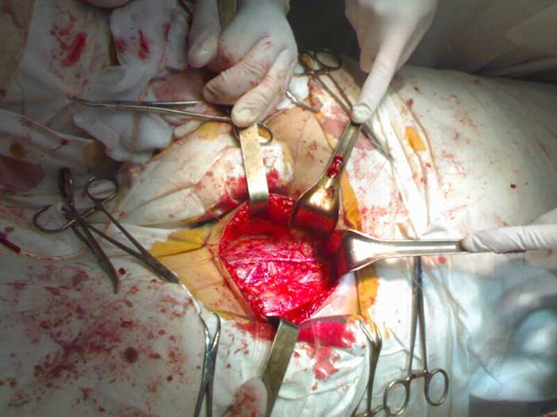

Dall’orinazione frequente al cancro della prostata, è un passo! Come scoprire in tempo la minaccia ? Intervista con il più importante urologo italiano.
Urologo principale del Fondazione medica.
Vanessa Piedastro
Dottore di scienze mediche, prima donna andrologo, esperta di riproduzione, primario del reparto di ricerca andrologica del Centro di Ricerca di urologia e radiologia chirurgica."CRURC" Fondazione medica.
Stage lavorativo – più di 15 anni
QUALI SONO I PRIMI SINTOMI DELLA PROSTATITE:
- Orinazione frequente nell’arco della giornata
-
- Calo della potenza sessuale (disfunzione erettile)
-
- Problemi di orinazione
-
- Sensazioni spiacevoli e dolori a pube e bacino
-
A livello iniziale la malattia può praticamente non farsi notare, ma il problema con la potenza sessuale e quello legato all’orinazione sono i primi sintomi della malattia. l’importante è non ignorarli! L’impotenza è infatti solo il minore tra i problemi che può comportare questa malattia. E’ senza dubbio molto più pericolosa la comparsa della massa tumorale, l’adenoma della prostata che comporta il cancro alla prostata.
Quindi possiamo dire che la prostatite porta con se diversi gravi problemi per gli uomini. quali:
IMPOTENZA – ADENOMA DELLA PROSTATA – CANCRO ALLA PROSTATA

Massa tumorale della prostata (Diametro 65мм) In più l’impotenza compare nel 100% dei casi, ovvero in ogni uomo che ha la prostatite, chi ne soffre prima, chi dopo, ma tutti ne soffrono.
l cancro della prostata compare agli stadi finali della prostatite, ma non è una cosa rara. Quegli uomini che non curano la prostatite ma se la portano dietro, sostanzialmente «giocano col fuoco». Se si vuole vivere a lungo ed avere una buona erezione, la prostatite va curata. E va fatto il prima possibile..
'Il problema consiste nel fatto che la maggior parte degli uomini malati neanche si rivolge al dottore per curarsi. Una parte di loro non ritiene che sia un problema pericoloso, un’altra parte se ne vergogna. In sostanza i malati non fanno che ignorare il problema. E se decidono di chiedere aiuto sostanzialmente lo fanno quando è già troppo tardi ed inizia a formarsi l’ammasso tumorale.
 Operazione per l’eliminazione del cancro alla prostata Bisogna ricordarsi che la prostatite è una malattia mortale, di cui il problema più pericoloso è la formazione del cancro della prostata. Che a sua volta nella quasi totalità dei casi porta alla morte. Quindi la malattia se non viene monitorata e curata porta alla morte già dopo uno massimo due anni dopo la comparsa del cancro .
Ma ora finalmente gli uomini hanno la possibilità di liberarsi una volta per tutte di questo problema, e senza dover andare in clinica .
Il fatto è che nel 2016 è comparso un preparato rivoluzionario che in un breve lasso di tempo ripristina il corretto funzionamento della prostata, elimina l’infiammazione, cura perfino la prostatite cronica, e aumenta anche in maniera significativa la potenza sessuale e la durata dei rapporti sessuali . Il nome di questo preparato è Prostero® . E’ un preparato nazionale decisamente accessibile in quanto a prezzo, nonostante alla creazione abbiano preso parte noti studiosi da Germania e Francia

Neò 2016 nel Centro di Ricerca di Padova, il centro di ricerca italiano più importante, per quanto riguarda l’urologia, si sono conclusi i test clinici riguardanti il preparato di nuova generazione Prostero® , creato per la battaglia contro la prostatite. L’ufficio stampa del centro ha dichiarato quanto segue:
1. L’efficacia di Prostero, calcolata con metodo standard (quantità di pazienti guariti rispetto al totale in un gruppo di 100 persone che hanno seguito un ciclo di cura) corrisponde al 98%.
2. La mancanza di recidiva dopo il cessare della cura (secondo un’osservazione di sei mesi dopo la fine delle cure) ì risultata del 99%.
3. Dopo una settimana di assunzione del preparato tutti i pazienti hanno notato un netto aumento della libido e della potenza sessuale.
4. Il preparato ha permesso un aumento della durata dei rapporti sessuali nel 95% dei casi.
5. Effetti collaterali indesiderati, tra cui le reazioni allergiche, non sono stati riscontrati.6. Il preparato rivoluzionario Prostero® è stato riconosciuto come cura principale per la lotta alla prostatite-
Commento dell’esperto:
Prof. Francesco Rocco
Medico Chirurgo Specialista in Urologia
Professore Ordinario f. r. di Urologia dell’Università Statale di Milano
Vicedirettore del Centro di Ricerca Scientifica Urologica e Salute Riproduttiva, membri corrispondente del CI, professore, noto studioso, urologo.
Stage lavorativo, più di 40 anni'Fino al 2016 non esisteva un prodotto efficace e soprattutto accessibile contro la prostatite. E questo ha comportato risultati veramente paurosi per quanto riguarda la percentuale dei malati, il 45% della popolazione adulta, e cosa più paurosa, il 30% tra i ragazzi più giovani. Prostero®. è una rivoluzione nella cura della prostatite, una vera panacea. L’efficacia delle gocce è stata dimostrata a livello pratico sia in Italia che in Europa. I il mix di componenti unico scoperto dagli studiosi e la scoperta delle cellule uniche hanno reso Prostero insostituibile in caso di prostatite
Il preparato ha superato i test clinici, i risultati hanno provocato stupore tra gli urologi e gli specialisti. Quasi il 98% dei malati sono guariti senza alcuna recidiva. Gli altri hanno visto sparire ogni sintomo come anche l’infiammazione della prostata. E per lo meno il 2% è riuscito a bloccare ogni problema recidivo grazie all’uso di Prostero®.
Allo stesso modo, grazie all’insieme innovativo di componenti presenti in Prostero®, c’è un forte aumento della potenza sessuale e della durata delle prestazioni sessuali.
Prostero®. è ottimo per il fatto che risolve il problema in maniera complessiva. Ha un incredibile effetto salutare su tutto il sistema orinale maschile. In parole povere dopo un ciclo di cura con il preparato l’organismo maschile inizia a funzionare come se si avesse 25 anni. Proprio per questo lo consiglio assolutamente a tutti gli uomini. Anche senza prostatite, in quanto il preparato ha un’ottima funzione preventiva e aumenta la potenza sessuale.
Oltre all’Italia il preparato è stato testato anche in Europa, come ad esempio all’Universita di Urologia di Parigi. I test clinici non hanno fatto che confermare i risultati nostrani. In francia si sono ottenute percentuali anche migliori.
Attualmente Prostero® è disponibile per l’ordine attualmente solo sul sito del progetto . Abbiamo provato più volte a venderlo in farmacia, ma loro vogliono venderlo con una percentuale di guadagno alta ad un prezzo molto più alto di quello che vogliamo noi. Dovete capire che l’Istituto di Ricerca e il Ministero non sono attività commerciali. Non abbiamo l’obbiettivo di guadagnare. Vogliamo semplicemente salvare più persone possibile. Per questo lo vendiamo così perdendoci, e guadagnando invece sull’esportazione. Lo scopo principale delle farmacie invece è guadagnare. Per questo abbiamo punti di vista completamente diversi riguardo il prezzo.

Confermo in tutto e per tutto! Questo preparato è super! l’ho comprato da poco, un mese emezzo fa, e mi sono dimenticato del problema. La prostatite mi è passata, nonostante non riuscissi a curarla da tempo, e in più è nettamente migliorata l’erezione e ho molta più voglia di fare sesso! Lo raccomando a tutti, soprattutto agli uomini over 40
Grazie Prostero .

Fratelli, non lasciate che la cosa vada avanti, se la prostatite diventa cronica comporta il cancro alla prostata, un mio parente purtroppo così ci è morto, quindi io ai primi cenni sono subito corso dal medico. E’ un anno che vado per dottori ma non cambia nulla. Mi curerò con Prostero è poco ma sicuro

L’ultimo anno e mezzo ho avuto problemi di prostata, ho fatto i massaggi, ho preso le pillole, ma non passava. Con Prostero invece ho risolto ogni problema in due settimane, in più ora mi sono veramente dimenticato della prostata, nonostante il dottore avesse detto che ormai era cronica e che ci fosse poco da fare

Ho iniziato a curarmi con il noto Afala, l’ho assunto su prescrizione del medico per quasi due mesi, e nessun risultato. Non mi sono sentito meglio, e correvo sempre più spesso in bagno. La cura ha addirittura peggiorato la situazione. Qui su internet ho trovato Prostero. Ho pensato fosse il caso di provarlo dopo quel fallimento medico:) Beh, i medicinali non sono riusciti a fare nulla, mentre Prostero ha risolto del tutto il mio problema molto rapidamente!
Non avrei mai pensato di ricevere un giorno questa orrenda diagnosi. Per un ragazzo giovane è una croce sia per la vita sessuale che per la sicurezza in se stessi. Ma io non mi sono disperato e ho cercato di curarmi su più fronti in maniera complessiva. Non ho risparmiato sulle cure. Mi sono curato a lungo ma mi ha aiutato alla fine solo Prostero! Non me lo sarei mai aspettato, funziona rapidamente ed in maniera efficace
Ve lo posso garantire. L’ho provato in prima persona. Prima prendevo antibiotici a ripetizione, mi facevo i massaggi, le ho provate tutte le cure. Ma dopo un paio di mesi ero di nuovo al punto di partenza con la prostata. Dopo Prostero invece sono passati già 4 mesi, e io mi sono scordato di aver mai avuto la prostatite.
Uomini, è una cosa tremenda. Sono cinque anni che convivo con la prostatite! Ho crisi fino a 5 volte all’anno! Sembra che vada un po’ meglio, poi torna ogni sintomo. Qualsiasi dottore a parte gli antibiotici non sa che consigliarmi. Solo sollievi momentanei e tutto da capo! Sono stufo di prendere antibiotici, mi sembra che l’organismo non li sopporti più. Pensate che Prostero aiuti?

Io ho curato la prostatite con Afala, l’ho comprato nel 2000. Ho fatto anche degli esercizi specifici per ridurre la massa in questione, mi ha aiutato certo, e molto, ma poi dopo un po’ è ricominciato tutto e ho dovuto ripetere il ciclo di cura. Con Prostero invece nessuna ricaduta, curato una volta per sempre.
Anche mio marito aveva problemi, abbiamo provato a lungo a curarlo, ma non ci si riusciva. Poi un dottore ci ha detto che i batteri che provocavano l’infezione ormai erano abituati agli antibiotici che prendeva mio marito. E’ allora che ci ha consigliato Prostero. Mio marito poi gli ha regalato una scatola di whiskey per ringraziarlo.

io mi sono consultato con il mio medico riguardo Prostero, lui ha detto che non si fida, ma sarà interessante vedere i miei risultati. Beh, il risultato è stato ottimo, io mi sono curato e ora il medico sta li che borbotta...

Beh, Prostero non ha analoghi sul mercato. Questo preparato previene addirittura il fattore oncologico. E’ l’unico preparato che funziona al 100%. Ho provato l’effetto su me stesso, e ha aiutato anche altri due miei conoscenti. Ora posso dire con certezza che non si tratta di un mio parere personale, ma dell’esperienza di diverse persone
L’ho ordinato circa un mese fa, l’effetto l’ho sentito già dopo una settimana. Pensavo che mi sarei dovuto operare, ora è tutto cambiato. Ho 54 ann, e mi sento come se ne avessi 34, non me lo sarei mai aspettato:)